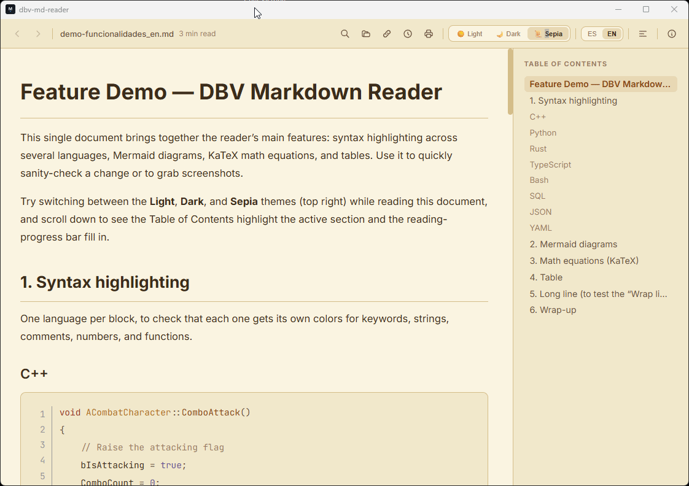

Recent files
The last documents you opened, one click away — never dig around to find them again.
Free · Open source · Windows and Linux · Spanish/English UI 🆕
Open .md files instantly, without launching an IDE or a browser.
~14 MB, starts in under 200 ms. Lightweight installer with Windows'
own rendering engine already built in.
Recommended on Windows 11: Microsoft Store, with auto-update and no SmartScreen warnings · Also Windows 10/11 (.exe) · Linux (.deb / .AppImage) · No account, no ads, no telemetry

Most Markdown readers are built on Electron: they bundle a full Chromium browser just to show you text, burning through hundreds of MB of RAM for a simple task. DBV Markdown Reader is written in Rust on top of Tauri v2 and uses the rendering engine your system already ships with (WebView2 on Windows, WebKitGTK on Linux) — same result, a fraction of the weight.

The same 2 .md files open at once — memory usage according to Windows Task Manager. Not even Notepad++, the historical reference for lightness, comes close.
The last documents you opened, one click away — never dig around to find them again.
Edit the file with your favorite editor and the view updates itself, without losing your scroll position.
Paste the URL of a .md published online and open it directly, no manual download needed.
All embedded HTML is automatically sanitized before rendering — zero malicious scripts.
```mermaid code blocks turn into interactive vector diagrams on the fly.
Inline LaTeX $...$ or block $$...$$, rendered instantly with KaTeX.
Light, Dark and Sepia for long reading sessions — remembers your choice between sessions.
Ctrl + F highlights every match in the document as you type.
Table of contents generated on its own from headings, with navigation and history.
Full interface in both languages, with automatic detection of your system language.
Pick the theme you want to see it in — the app remembers your preference just like here.


On Windows 11, the easiest way is Microsoft Store. You can also use the .exe installer or the Linux package (.deb / .AppImage) from the Releases page. No Rust, Node or any development tools needed. On macOS? Download the .dmg from Releases or build it yourself — instructions in the README.
Double-click, no admin rights required. You decide whether dbv-md-reader associates with .md, via a screen with checkboxes checked by default.
Double-click any .md file, or open it from the app with Ctrl + O.
Free, open source and no strings attached. Windows (Microsoft Store or installer), Linux and macOS. If something breaks, open an issue on GitHub.